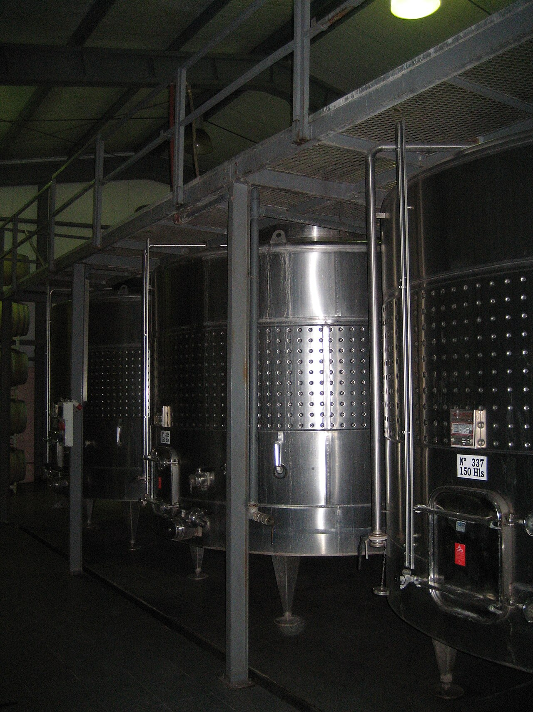

发酵工程及其应用
本期导读
菌种选育 · 发酵罐 · 分离提纯 · 单细胞蛋白

视频原话 · 导读3 句
- 同学们好！这节课梳理人教版选择性必修三第一章第三节——发酵工程及其应用。8.1s
- 高考常考发酵工程的基本环节、发酵条件的控制，以及产品分离提纯和各领域应用。8.1s
- 我们按七个考点梳理，每个考点都讲清楚怎么考、怎么做。5.6s
发酵工程的特点01#
发酵工程：利用微生物的特定功能，通过现代工程技术，规模化生产对人类有用的产品
生产条件温和
常温、常压
原料丰富、廉价
淀粉、糖蜜、废液等
产物专一
选育的菌种生产特定产物
污染小、易处理
废弃物对环境影响小
易错
发酵工程用选育的优良单一菌种、在发酵罐中液体发酵；传统发酵用天然混合菌种
视频原话4 句
- 考点一，发酵工程。它是利用微生物的特定功能，通过现代工程技术，规模化生产对人类有用的产品。10.3s
- 发酵工程的特点：生产条件温和，原料来源丰富且价格低廉。6.5s
- 产物专一，废弃物对环境的污染小、容易处理。4.8s
- 易错：发酵工程用的是经过选育的优良单一菌种，通常在发酵罐中液体发酵，这正是它与传统发酵技术的主要区别。11.1s
发酵工程的环节02#
选育菌种
→
扩大培养
增加菌种数量
→
配制培养基
→
灭菌
→
接种
→
发酵罐内发酵
中心环节
→
分离、提纯
扩大培养：在接种前增加菌种的数量
培养基和发酵设备都要经过严格灭菌，防止杂菌污染
发酵罐内发酵是发酵工程的中心环节
分离、提纯产物，获得产品
易错
扩大培养的目的是增加菌种数量，不是获得产物；中心环节是发酵罐内发酵
视频原话5 句
- 考点二，发酵工程的基本环节。先选育菌种，再扩大培养，增加菌种的数量。7.9s
- 然后配制培养基、灭菌、接种。3.6s
- 接着在发酵罐内发酵，这是发酵工程的中心环节。4.9s
- 最后分离、提纯产物，获得产品。3.8s
- 考法：排序和找中心环节。易错：扩大培养的目的是增加菌种数量，不是为了获得产物。9.2s
菌种的选育03#
- 性状优良的菌种
- 从自然界中筛选
- 诱变育种如：高产青霉素的青霉菌
- 基因工程育种如：生产乙肝疫苗的酵母菌
解题方法
用射线、化学药剂处理的是诱变育种；导入外源基因的是基因工程育种
视频原话4 句
- 考点三，菌种的选育。性状优良的菌种，可以从自然界中筛选出来。6.8s
- 也可以通过诱变育种获得，比如用诱变的方法选育高产青霉素的青霉菌。6.8s
- 还可以通过基因工程育种获得，比如把乙肝病毒的抗原基因导入酵母菌，生产乙肝疫苗。8.3s
- 考法：判断育种方法。解题方法：有“诱变”字样或用射线、化学药剂处理的是诱变育种；导入外源基因的是基因工程育种。12.1s
发酵条件的控制04#
随时检测微生物数量、产物浓度
及时添加必需的营养组分
严格控制温度、pH、溶解氧
例：谷氨酸棒状杆菌
中性和弱碱性 → 积累谷氨酸
酸性 → 易形成谷氨酰胺和 N-乙酰谷氨酰胺
解题方法
环境条件不仅影响微生物的生长繁殖，也影响代谢途径，条件变了，产物也会变
视频原话5 句
- 考点四，发酵过程的控制。要随时检测培养液中的微生物数量和产物浓度，并及时添加必需的营养组分。10.3s
- 还要严格控制温度、pH和溶解氧等发酵条件。4.8s
- 发酵罐上有搅拌叶轮、通入无菌空气的管道，还有温度、pH检测装置和冷却水夹套。8.5s
- 例如谷氨酸棒状杆菌，在中性和弱碱性条件下积累谷氨酸；在酸性条件下容易形成谷氨酰胺和N-乙酰谷氨酰胺。11.1s
- 考法：环境条件改变，产物也会改变。解题方法：答题时抓住“条件影响微生物的生长繁殖和代谢途径”。10.8s
产品的分离提纯05#
产品是微生物细胞本身
方法：过滤、沉淀 → 分离菌体并干燥
例：单细胞蛋白
产品是代谢物
方法：根据产物性质，提取、分离、纯化
例：抗生素、氨基酸、酶制剂
解题方法
先判断产品是菌体还是代谢物：菌体用过滤、沉淀；代谢物用提取、分离、纯化
视频原话3 句
- 考点五，产品的分离和提纯。产品如果是微生物细胞本身，可以采用过滤、沉淀等方法把菌体分离和干燥。10.4s
- 产品如果是代谢物，要根据产物的性质，采取适当的提取、分离和纯化措施。7.7s
- 解题方法：先判断产品是菌体还是代谢物，菌体用过滤、沉淀；代谢物用提取、分离、纯化。9.7s
啤酒的工业化生产06#
发芽
产生淀粉酶
→
焙烤
杀死胚，酶不失活
→
碾磨
→
糖化
淀粉 → 糖浆
→
蒸煮
风味、终止酶、灭菌
→
发酵
主发酵 + 后发酵
→
消毒、终止
主发酵：酵母菌繁殖、大部分糖的分解和代谢物的生成
后发酵：在低温、密闭的环境下储存一段时间
其他：酱油等传统产品；柠檬酸、味精等食品添加剂；淀粉酶等酶制剂
易错
焙烤要杀死种子的胚，但不能使淀粉酶失活；蒸煮才对糖浆灭菌
视频原话6 句
- 考点六，在食品工业上的应用，以啤酒的工业化生产为例。大麦发芽，产生淀粉酶。8.5s
- 焙烤：加热杀死种子的胚，但不使淀粉酶失活；然后碾磨、糖化，淀粉分解成糖浆。8.6s
- 蒸煮：产生风味组分，终止酶的进一步作用，并对糖浆灭菌。6.1s
- 接种酵母菌发酵，分主发酵和后发酵：主发酵中酵母菌繁殖、糖大部分被分解；后发酵要在低温、密闭环境下储存一段时间。12.0s
- 发酵工程还能生产酱油等传统产品，生产柠檬酸、味精等食品添加剂，以及淀粉酶等酶制剂。9.3s
- 考法：问焙烤、蒸煮的目的。易错：焙烤要杀死胚，但淀粉酶不能失活。7.8s
医药与农牧业应用07#
医药
抗生素（如青霉素）
基因工程菌生产疫苗、激素等
基因工程菌生产疫苗、激素等
微生物肥料
根瘤菌肥、固氮菌肥
增进土壤肥力
增进土壤肥力
微生物农药
苏云金杆菌
防治多种农林害虫
防治多种农林害虫
微生物饲料
淀粉或纤维素水解液、制糖废液为原料
→ 单细胞蛋白
→ 单细胞蛋白
易错
单细胞蛋白是微生物菌体本身，不是从微生物细胞中提取的蛋白质
视频原话5 句
- 考点七，在医药和农牧业上的应用。医药上，可以生产抗生素，比如青霉素；还可以用基因工程菌生产疫苗、激素等。11.4s
- 农牧业上，生产微生物肥料，比如根瘤菌肥、固氮菌肥，能增进土壤肥力。7.5s
- 生产微生物农药，比如用苏云金杆菌防治多种农林害虫。5.9s
- 生产微生物饲料：以淀粉或纤维素的水解液、制糖工业的废液为原料，发酵获得大量的微生物菌体，叫作单细胞蛋白。11.0s
- 易错：单细胞蛋白是微生物菌体本身，不是从微生物细胞中提取出来的蛋白质。8.0s
易错速查✓
先自己判断，再点按钮查看对错与解析。
- 1发酵工程的中心环节是菌种选育说法错误：中心环节是发酵罐内发酵
- 2性状优良的菌种可通过诱变育种获得说法正确。
- 3谷氨酸发酵在酸性条件下积累谷氨酸说法错误：中性和弱碱性条件下积累谷氨酸
- 4产品是菌体时，可用过滤、沉淀分离说法正确。
- 5单细胞蛋白是从微生物中提取的蛋白质说法错误：单细胞蛋白是微生物菌体本身
- 6苏云金杆菌可用来制作微生物农药说法正确。
发酵罐是中心，条件控制是关键！
视频原话 · 易错速查5 句
- 最后，用六道判断题检验一下。3.6s
- 判断一：发酵工程的中心环节是菌种选育？错，是发酵罐内发酵。判断二：优良菌种可以通过诱变育种获得？对。12.6s
- 判断三：谷氨酸发酵在酸性条件下积累谷氨酸？错，是中性和弱碱性。判断四：产品是菌体时可用过滤、沉淀分离？对。13.9s
- 判断五：单细胞蛋白是从微生物中提取的蛋白质？错，是菌体本身。判断六：苏云金杆菌可以制作微生物农药？对。12.7s
- 七个考点串成一条线：发酵罐是中心，条件控制是关键。我们下期再见！7.5s
图片来源
图片来源：Wikimedia Commons —— EJ&EZ《Stainless steel fermentation tank》CC BY 2.0
Photo: EJ&EZ, CC BY 2.0